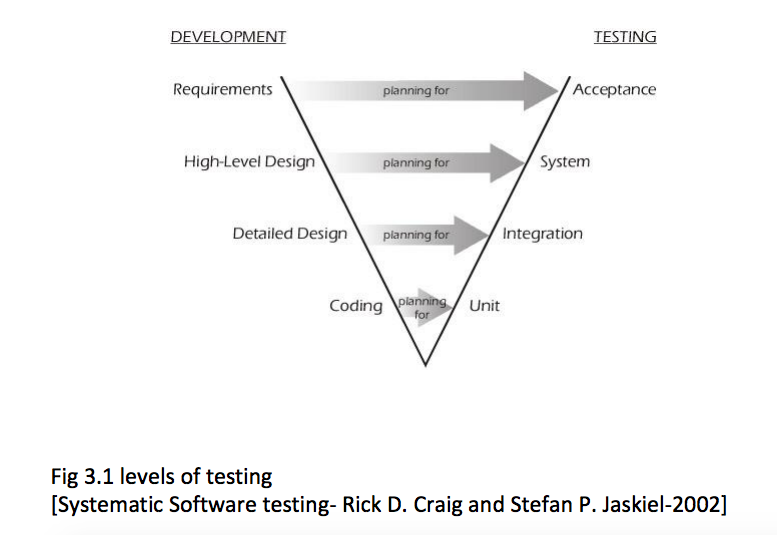

Testing¶
System Development with Python
Git repository:
https://github.com/UWPCE-PythonCert/SystemDevelopment
What is testing?¶
Code which runs your application in as close to a real environment as feasible and validates its behavior
Terminology of testing¶
- Unit tests
- Integration tests
- High level system tests
- Acceptance tests
- Black box / White box testing
“V” model and tests levels¶
Unit testing¶
- Test smallest discrete units of source code
- Tests should be independent of each other
- Can separate tests from required resources through fixtures and mocking
- Automatable
- Integrates with development process
What should be tested?¶
The percentage of code which gets run in a test is known as the coverage.
100% coverage is an ideal to strive for. But the decision on when and what to test should take into account the volatility of the project.
Unit-testing tools¶
- unittest, the test framework that ships with Python. Started life as PyUnit. http://docs.python.org/3/library/unittest.html
- nose2, a test runner which integrates with unittest, making it nicer and easier http://nose2.readthedocs.org/en/latest/
- mock, an object mocking library. Ships with Python 3.3+ https://docs.python.org/dev/library/unittest.mock.html
- pytest, an alternative to unittest, which you should be pretty familiar with now http://pytest.org/latest/
About Unit-testing¶
- Tests should be independent.
- Tests do not run in order, which shouldn’t matter, see point 1.
- Test fixtures are available to do any setup needed for tests.
unittest.TestCase anatomy¶
- create a new subclass of unittest.TestCase
- name test methods test_foo so the test runner finds them
- make calls to the self.assert* family of methods to validate results
import unittest
class TestTest(unittest.TestCase):
def setUp(self):
x = 2
def test_add(self):
self.assertEqual(x+2, 4)
def test_len(self):
self.assertEqual(len('foo'), 3)
if __name__ == '__main__':
unittest.main()
Assert Methods¶
TestCase contains a number of methods named assert* which can be used for validation, here are a few common ones:
- assertEqual(first, second, msg=None)
- assertNotEqual(first, second, msg=None)
- assertTrue(expr, msg=None)
- assertFalse(expr, msg=None)
- assertIn(first, second)
- assertRaises(exc, fun, msg=None, *args, **kwargs)
See a full list at http://docs.python.org/3/library/unittest.html#assert-methods or dir(unittest.TestCase) or to get really fancy
print([i for i in dir(unittest.TestCase) if i.startswith('assert')])
Fixtures: Setting up your tests for success¶
(or failure!)
Test fixtures are a fixed baseline for tests to run from consistently, also known as test context
Fixtures can be set up fresh before each test, once before each test case, or before an entire test suite
unittest provides fixture support via these methods:
- setUp / tearDown - these are run before and after each test method
- setUpClass / tearDownClass - these are run before/after each TestCase
- setUpModule / tearDownModule - run before/after each TestSuite
- (new in Python 2.7) addCleanup / doCleanups - called after tearDown, in case a test throws an exception
Testing floating point values¶
Why can’t we just test if .5 == .5 ?
In [1]: 3*.15 == .45
Out[1]: False
In [2]: 3*.15
Out[2]: 0.44999999999999996
In [3]: 3*.15 * 10 / 10 == .45
Out[3]: True
There are an infinite number of floating point numbers, so they are stored as an approximation in computing hardware.
levels of precision of floating point¶
Floating point numbers are stored in IEEE 754 64-bit double precision format, so 1 bit for the sign, 11 bits for the exponent, and the remaining 52 for the fraction
So we can count on 16 digits of precision in decimal:
In [39]: len(str(2**52))
Out[39]: 16
In [40]: .1+.2
Out[40]: 0.30000000000000004
In [41]: len('3000000000000000')
Out[41]: 16
# with repeated operations, the errors eventually build up: here's multiplying by '1' 10 million times:
In [64]: x=1
In [69]: for i in range(10000000): x *= (.1 + .2)/.3
Out [69]: 1.000000002220446
assertAlmostEqual¶
Verifies that two floating point values are close enough to each other. Add a places keyword argument to specify the number of significant digits.
import unittest
class TestAlmostEqual(unittest.TestCase):
def setUp(self):
pass
def test_floating_point(self):
self.assertEqual(3*.15, .45)
def test_almost_equal(self):
self.assertAlmostEqual(3*.15, .45, places=7)
Running your tests¶
Call unittest.main() right in your module
if __name__ == "__main__":
unittest.main()
If it gets cumbersome with many TestCases, organize the tests into a test suite
Test Suites¶
Test suites group test cases into a single testable unit
import unittest
from calculator_test import TestCalculatorFunctions
suite = unittest.TestLoader().loadTestsFromTestCase(TestCalculatorFunctions)
unittest.TextTestRunner(verbosity=2).run(suite)
Tests can also be organized into suites in the if __name__ == “__main__”: block
Nose2¶
Nose2 is the new nose. Nose is barely being maintained, and directs users to nose2.
A test runner which autodiscovers test cases
Nose2 will find tests for you so you can focus on writing tests, not maintaining test suites
To find tests, nose2 looks for modules (such as python files) whose names start with ‘test’. In those modules, nose2 will load tests from all unittest.TestCase subclasses, as well as functions whose names start with ‘test’.
Running your tests is as easy as
$ nose2
http://nose2.readthedocs.org/en/latest/getting_started.html#running-tests
nose2 plugins¶
Many plugins exist for nose2, such as code coverage: Some plugins, such as coverage, must be additionally installed
$ pip install cov-core
# now it can be used
$ nose2 --with-coverage
Some of many useful plugins installed by default:
- Test Generators http://nose2.readthedocs.org/en/latest/plugins/generators.html
- Parameterized Tests http://nose2.readthedocs.org/en/latest/plugins/parameters.html
- Stop after first error or failuer -F
- Drop in to the debugger on failure -D
running coverage¶
Install with Pip. Written by Ned Batchelder
To run coverage on your test suite:
coverage run my_program.py arg1 arg2
This generates a .coverage file. To analyze it on the console:
coverage report
Else generate an HTML report in the current directory:
coverage html
To find out coverage across the standard library, add -L:
-L, --pylib Measure coverage even inside the Python installed
library, which isn't done by default.
branch coverage¶
consider the following code:
x = False # 1
if x: # 2
print("in branch") # 3
print("out of branch") # 4
We want to make sure the branch is being bypassed correctly in the False case
Track which branch destinations were not visited with the –branch option to run
coverage run --branch myprog.py
Doctests¶
Tests placed in docstrings to demonstrate usage of a component to a human in a machine testable way
def square(x):
"""Squares x.
>>> square(2)
4
>>> square(-2)
4
"""
return x * x
python -m doctest -v example.py
Now generate documentation, using epydoc for example:
$ epydoc example.py
http://docs.python.org/3/library/doctest.html
http://www.python.org/dev/peps/pep-0257/
Test Driven Development (TDD)¶
In TDD, the tests are written the meet the requirements before the code exists.
Once the collection of tests passes, the requirement is considered met.
We don’t always want to run the entire test suite. In order to run a single test with nose:
nose2 calculator_test.TestCalculatorFunctions.test_add
Exercises¶
- Add unit tests for each method in calculator_functions.py
- Add fixtures via setUp/tearDown methods and setUpClass/tearDownClass class methods. Are they behaving how you expect?
- Add additional unit tests for floating point calculations
- Fix any failures in the code
- Add doctests to calculator_functions.py
One more Python feature before getting back to testing.. the “with” statement
Context managers via the “with” statement¶
If you’ve been opening files using “with” (and you probably should be), you have been using context managers:
with open("file.txt", "w") as f:
f.write("foo")
A context manager is just a class with __enter__ and __exit__ methods defined to handle setting up and tearing down the context
Provides generalizable execution contexts in which setup and teardown of context are executed no matter what happens
This allows us to do things like setup/teardown and separate out exception handling code
Writing a context manager¶
Define __enter__(self) and __exit__(self, type, value, traceback) on a class
If __exit__ returns a true value, a caught exception is not re-raised
For example :
import os, random, shutil, time
class TemporaryDirectory(object):
"""A context manager for creating a temporary directory which gets destroyed on context exit"""
def __init__(self,directory):
self.base_directory = directory
def __enter__(self):
# set things up
self.directory = os.path.join(self.base_directory, str(random.random()))
os.makedirs(self.directory)
return self.directory
def __exit__(self, type, value, traceback):
# tear it down
shutil.rmtree(self.directory)
with TemporaryDirectory("/tmp/foo") as dir:
# write some temp data into dir
with open(os.path.join(dir, "foo.txt"), 'wb') as f:
f.write("foo")
time.sleep(5)
Context Manager exercise¶
Create a context manager which prints information on all exceptions which occur in the context and continues execution
with YourExceptionHandler():
print("do some stuff here")
1/0
print("should still reach this point")
Why might using a context manager be better than implementing this with try..except..finally ?
Also see the contextlib module
Now we’ve got the tools to really test¶
Consider the application in the examples/wikidef directory. Give the command line utility a subject, and it will return a definition.
./define.py Robot | html2text
How can we test our application code without abusing (and waiting for) Wikipedia?
Using Mock objects to test an application with service dependencies¶
Mock objects replace real objects in your code at runtime during test
This allows you to test code which calls these objects without having their actual code run
Useful for testing objects which depend on unimplemented code, resources which are expensive, or resources which are unavailable during test execution
Mocks¶
The MagickMock class will keep track of calls to it so we can verify that the class is being called correctly, without having to execute the code underneath
import mock
mock_object = mock.MagicMock()
mock_object.foo.return_value = "foo return"
print(mock_object.foo.call_count)
print(mock_object.foo())
print(mock_object.foo.call_count)
# raise an exception by assigning to the side_effect attribute
mock_object.foo.side_effect = Exception
mock_object.foo()
Easy mocking with mock.patch¶
patch acts as a function decorator, class decorator, or a context manager
Inside the body of the function or with statement, the target is patched with a new object. When the function/with statement exits the patch is undone
Using patch¶
# patch with a decorator
@patch.object(Wikipedia, 'article')
def test_article_success_decorator_mocked(self, mock_method):
article = Definitions.article("Robot")
mock_method.assert_called_once_with("Robot")
# patch with a context manager
def test_article_success_context_manager_mocked(self):
with patch.object(Wikipedia, 'article') as mock_method:
article = Definitions.article("Robot")
mock_method.assert_called_once_with("Robot")
Exercises¶
When define.py is given the name of a non-existant article, an exception is thrown.
Add a new test that confirms this behavior